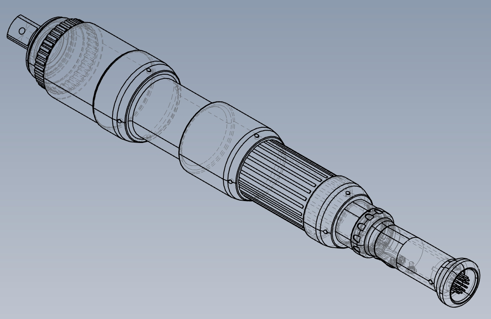

플랜트, 대형 부품 및 대형 중장비 현장을 위해 특화된 1300Nm 스트레이트 툴에 대한 안내입니다.
기존 최대 420Nm 라인업의 스트레이트 타입 툴(EH2-R3420-S)에 기어비 4.31의 배력 기어 유닛을 결합하여 1300Nm의 강력한 출력을 달성하면서도 안정적인 토크 정밀도를 유지하는 것이 특징입니다.
- 납기: 기본 3개월
- 단납기 대응: 부품재고가 있을경우 단납기 대응가능합니다. 에스틱에 문의해 주시면 안내해 드리겠습니다.

1. 고출력 토크의 구현과 성능 검증
- 안정적인 토크 정밀도: 외부 기어가 장착되었음에도 업계 최고 수준의 정밀도를 보장합니다.
- 검증된 내구성: 당사의 시험환경에서 하드 조인트 체결 내구성 테스트 결과 20만 회의 체결 후에도 툴 파손 및 정밀도 저하가 없는 안정성을 확인했습니다.
2. 핵심 제품 사양
작업 효율을 결정짓는 핵심 스펙은 다음과 같습니다.
🔧 툴 (형식: EH2-R3420-S)
- 적용 토크 범위: 260 ~ 1040 Nm
- 최고 회전 속도: 44 rpm
- 툴 중량: 11 kg (전체 세트 중량 13.9 kg)
- 출력축 치수: 25.4 sq
- 전장: 599.5 mm
🛡️ 악세서리 반력바 (형식: EH2-RFR01)
체결 반동 제어 및 워크에 툴을 고정하는 역할
- 최대 대응 반력: 1300 Nm
- 특징: 샤프트 회전 가능 (100mm 스트로크 내 자유로운 위치 조정)
- 중량: 2.9 kg
3. 안전한 체결을 위한 워크 고정 안내
고토크 체결 시 발생하는 반력으로 인한 위험을 방지하기 위해, 세트로 제공되는 반력바를 사용하여 툴을 워크에 단단히 고정해야 합니다.
🚨 반력바 사용 시 필수 주의사항
- 소켓 높이 일치: 체결 소켓과 반력바 소켓은 반드시 동일한 높이로 세팅해야 합니다.
- 반력바 샤프트(25.4 sq)는 시판 소켓 장착이 가능하며, 체결 볼트에 인접한 볼트/너트를 지지대로 삼아 워크에 고정합니다.
- 사용 토크 및 피치 간격에 따라 반력바가 허용하는 각도와 최대 높이 제한이 존재합니다. (예: 1300Nm 사용 시 허용 각도 45° 이하) 첨부자료를 확인하여 반드시 준수해 주십시오.
※ 옵션 품목 (별도 구매품): 작업 환경에 맞춰 수직/수평 방향의 서포트 핸들 및 행거도 제작 가능합니다.
4. 도입 안내 (주문시 주의사항)
- 납기: 기본 3개월
- 단납기 대응: 부품재고가 있을경우 단납기 대응가능합니다. 에스틱에 문의해 주시면 안내해 드리겠습니다.